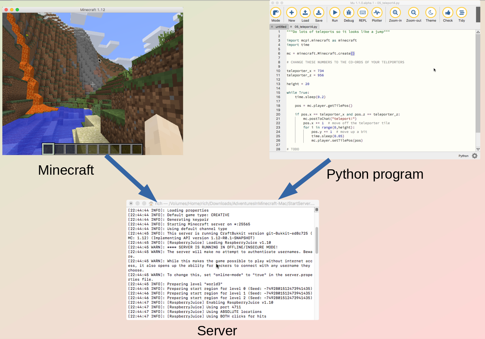

13. Python in Minecraft
Note
The Minecraft Python library is made by David Whale and Martin O’Hanlon. I highly recommend their book Adventures in Minecraft which contains a great deal more programs.
13.1. Setup
You will need to own Minecraft Java Edition (not Bedrock edition).
If you already have a Mojang or Microsoft account, go to the Minecraft website and click login. If you haven’t accessed it for years you may need to reset your password. If you already own Minecraft it will then tell you. If you don’t have an account, create one, and buy Minecraft Java Edition.
13.1.1. Setup Java
You will need to download and install Java from adoptopenjdk.net.
I recommend the latest (currently OpenJDK 16) because it will be useful for other things, but if you have problems you can fall back to using OpenJDK 8. Choose HotSpot and click the button to download.
13.1.2. Setup Server
Download the Adventures In Minecraft Starter Kit from
https://adventuresinminecraft.github.io and unpack it in a folder on your desktop. There are videos on the site that explain how to set it up.
Use Notepad or SublimeText to edit the file Server/server.properties. Change this setting
level-type=flat
to generate a flat world. (But it’s up to you what sort of world you prefer!)
To run the server, double click the StartServer file. It will open a server console window, and ask you press space.
If you want to generate another world later you can change
level-name=world2
and then run the server again.
Once the server is running, to stop nighttime from happening I suggest you type this at the server console
gamerule doDaylightCycle false
time set day
If only we could do that in real life!
You must leave the server console window open at all times. When you want to quit, first type
stop
at the server console, so it saves your world.
Advanced Challenge
Setup a more modern Minecraft server, such as PaperMC.
Then try to get the Raspberryjuice plugin to work with it so you can use it with Python. This is not easy; I couldn’t do it!
13.1.3. Setup Minecraft
Run the Minecraft launcher you downloaded from minecraft.net. We will not be using the default which is the latest version of Minecraft. Instead we will be using version 1.12.
Run the Minecraft Launcher. Click Installations then New Installation, then select version release 1.12. Then click Create. Then click Play next to the new installation in the list.
Minecraft will run. Click multiplayer. Then add server. Enter the server address as
localhost
Click ‘done’. Click on your server to connect to it.
13.1.4. Setup Mu
Mu is the Python editor we have already been using, so you probably already have it installed. However you need to make sure you have the latest version. You can download it from the links at the top of https://codewith.mu/en/download.
Run Mu. Click Mode and select Python3. Then click the small gadget icon in the bottom right hand corner of the window. Click third party packages. Type
mcpi
into the box. Click OK. The library will download.
If you are not using Mu you can install mcpi from the command line like this:
pip3 install mcpi
13.1.5. Summary
{kind=link}
You need to have the Minecraft server, Minecraft (the client) and Mu all running at the same time. It may be useful to arrange them in separate windows. Your Python program will talk to the server, and Minecraft will also talk to the server, allowing you to see the results of your program in Mincraft.
13.2. Hello Minecraft
This program tests you have a connection to the Minecraft server and displays a message on the client.
1 2 3 | from mcpi.minecraft import *
mc = Minecraft.create()
mc.postToChat("Hello Minecraft World")
|
13.3. Coordinates
This program gets the player’s co-ordinates and prints them to the chat.
1 2 3 4 5 6 7 8 9 10 | from mcpi.minecraft import *
import time
mc = Minecraft.create()
while True: # loop will make sure your game runs forever
time.sleep(1)
pos = mc.player.getTilePos()
print(pos)
mc.postToChat(pos)
|
13.4. Changing the player’s position
Find the coordinates of a location in your world, either by pressing F3 in the game, or running Program 13.2 Enter these coordinates in this program and run it to teleport to that location.
1 2 3 4 5 6 7 8 9 10 | from mcpi.minecraft import *
mc = Minecraft.create()
# change these to where you want to go
x = 10
y = 11
z = 12
mc.player.setTilePos(x, y, z)
|
13.5. Build a teleporter
Before you run this program, build two tiles in the game to be your teleporters and write down their co-ordinates.
1 2 3 4 5 6 7 8 9 10 11 12 13 14 15 16 17 18 19 20 21 22 23 | from mcpi.minecraft import *
mc = Minecraft.create()
# CHANGE THESE NUMBERS TO THE CO-ORDS OF YOUR TELEPORTERS
teleporter_x = 742
teleporter_z = 955
destination_x = 735
destination_z = 956
while True:
# Get player position
pos = mc.player.getTilePos()
print(pos)
# Check whether your player is standing on the teleport
if pos.x == teleporter_x and pos.z == teleporter_z:
mc.postToChat("teleport!")
pos.x = destination_x
pos.z = destination_z
mc.player.setTilePos(pos)
|
Exercise
Add this line to the end of the program:
time.sleep(5)
Then add another line that teleports the player somewhere else.
13.6. Teleport player into the air
1 2 3 4 5 6 7 8 9 10 11 12 13 14 15 16 17 18 19 20 | from mcpi.minecraft import *
mc = Minecraft.create()
# CHANGE THESE NUMBERS TO THE CO-ORDS OF YOUR TELEPORTERS
teleporter_x = 9
teleporter_z = 12
height = 30
while True:
pos = mc.player.getTilePos()
# Check whether your player is standing on the teleport
if pos.x == teleporter_x and pos.z == teleporter_z:
mc.postToChat("teleport!")
pos.y += height # up in the air!
pos.x += 1 # move off the teleporter tile
mc.player.setTilePos(pos)
|
13.7. Teleport jump
This program does a series of teleports in quick succession to give the effect of a jump.
1 2 3 4 5 6 7 8 9 10 11 12 13 14 15 16 17 18 19 20 21 22 23 | from mcpi.minecraft import *
import time
mc = Minecraft.create()
# CHANGE THESE NUMBERS TO THE CO-ORDS OF YOUR TELEPORTERS
teleporter_x = 9
teleporter_z = 12
height = 20
while True:
pos = mc.player.getTilePos()
if pos.x == teleporter_x and pos.z == teleporter_z:
mc.postToChat("teleport!")
# move off the teleporter tile so we dont land on it again
pos.x += 1
for i in range(0, height):
pos.y += 1 # move up a bit
time.sleep(0.1) # short delay of 0.2 seconds
mc.player.setTilePos(pos)
|
Exercise
Change the height of the jump.
Exercise
Make the jump faster.
Exercise
Move the player in X and Z directions as well as Y during the jump.
Advanced
Instead of checking if player is on a single teleporter tile, check if player is within a larger area. Use <, and, > operators.
13.8. Create a block
This program creates a block. Each type of block has it’s own number,
but if we import mcpi.block we can use names instead remembering
numbers.
1 2 3 4 5 6 7 8 9 10 | from mcpi.minecraft import *
from mcpi.block import *
mc = Minecraft.create()
pos = mc.player.getTilePos()
x = pos.x
y = pos.y
z = pos.z
blocktype = 1
mc.setBlock(x, y, z, blocktype)
|
Exercise
Make the block appear a short distance from the player.
13.9. Types of block
AIR |
BED |
BEDROCK |
BEDROCK_INVISIBLE |
BOOKSHELF |
BRICK_BLOCK |
CACTUS |
CHEST |
CLAY |
COAL_ORE |
COBBLESTONE |
COBWEB |
CRAFTING_TABLE |
DIAMOND_BLOCK |
DIAMOND_ORE |
DIRT |
DOOR_IRON |
DOOR_WOOD |
FARMLAND |
FENCE |
FENCE_GATE |
FIRE |
FLOWER_CYAN |
FLOWER_YELLOW |
FURNACE_ACTIVE |
FURNACE_INACTIVE |
GLASS |
GLASS_PANE |
GLOWSTONE_BLOCK |
GOLD_BLOCK |
GOLD_ORE |
GRASS |
GRASS_TALL |
GRAVEL |
ICE |
IRON_BLOCK |
IRON_ORE |
LADDER |
|
LAPIS_LAZULI_ORE |
LAVA |
LAVA_FLOWING |
LAVA_STATIONARY |
LEAVES |
MELON |
MOSS_STONE |
MUSHROOM_BROWN |
MUSHROOM_RED |
OBSIDIAN |
REDSTONE_ORE |
SAND |
SANDSTONE |
SAPLING |
SNOW |
SNOW_BLOCK |
STAIRS_COBBLESTONE |
|
STAIRS_WOOD |
STONE |
STONE_BRICK |
STONE_SLAB |
STONE_SLAB_DOUBLE |
SUGAR_CANE |
TNT |
TORCH |
WATER |
WATER_FLOWING |
WATER_STATIONARY |
WOOD |
WOOD_PLANKS |
LAPIS_LAZULI_BLOCK |
WOOL |
13.10. Create a block inside a loop
This program creates a block over and over again in a loop. Move around to see it.
1 2 3 4 5 6 7 8 9 10 11 12 | from mcpi.minecraft import *
from mcpi.block import *
mc = Minecraft.create()
while True:
pos = mc.player.getTilePos()
x = pos.x
y = pos.y
z = pos.z
blocktype = WOOL
mc.setBlock(x, y, z, blocktype)
|
Exercise
Make the block appear one meter below the player’s position.
Exercise
Change the block to something else, e.g. ICE
13.11. Create a tower of blocks
We will use a for loop to easily build a tower of blocks.
1 2 3 4 5 6 7 8 9 10 | from mcpi.minecraft import *
mc = Minecraft.create()
pos = mc.player.getTilePos()
x = pos.x + 3
y = pos.y
z = pos.z
for i in range(10):
mc.setBlock(x, y + i, z, 1)
|
Exercise
How high can you make the tower?
Exercise
Change the program to create three towers next to one another.
13.12. Clear space
The setBlocks() function lets us create a large cube of blocks. If
we create blocks of type AIR this has the effect of removing all
blocks! This is such a useful thing that we will need it in the future,
therefore in this program we put it in its own function. Make sure to save the
program as clear_space.py so you can import it into the next
program.
1 2 3 4 5 6 7 8 9 10 11 | from mcpi.minecraft import *
from mcpi.block import *
def clear_space(mc, size):
pos = mc.player.getTilePos()
mc.setBlocks(pos.x-size, pos.y, pos.z-size, pos.x+size, pos.y+size, pos.z+size,
AIR)
mc = Minecraft.create()
clear_space(mc, 10)
|
13.13. Build a house
Make sure you have saved the previous Program 13.10 to the same directory before you run
this program because we are going to import the function from
clear_space.py. Save this program as house.py.
1 2 3 4 5 6 7 8 9 10 11 12 13 14 15 16 17 18 19 20 21 22 23 24 25 26 | from mcpi.minecraft import *
from mcpi.block import *
# This MUST be the name you gave to your clear space program!
from clear_space import *
def make_house(mc, x, y, z, width, height, length):
mc.setBlocks(x, y, z, x + width, y + height, z + length, STONE)
# What happens if we make AIR inside the cube?
mc.setBlocks(x + 1, y + 1, z + 1,
x + width - 2, y + height - 2, z + length - 2, AIR)
mc = Minecraft.create()
pos = mc.player.getPos()
x = pos.x
y = pos.y
z = pos.z
width = 10
height = 50
length = 60
# Use the function from the other program
clear_space(mc, 10)
make_house(mc, x, y, z, width, height, length)
|
Exercise
Run the program and manually bash a hole in the wall to see what is inside and to give you a way to get into the building.
Exercise
Change the program so it automatically makes a hole for a door.
Exercise
Lower the floor in your house.
Exercise
Add some furniture, torches, windows.
Advanced
Make the windows get bigger if you increase the size of the house.
Exercise
Try filling a house with LAVA, or WATER, or TNT (Be careful with TNT, too much will crash your computer!)
13.14. Build a street of houses
Make sure you have saved the previous Program 13.11
to the same directory before you run
this program because we are going to import the function from
house.py.
1 2 3 4 5 6 7 8 9 10 11 12 13 14 15 16 17 18 19 20 21 22 23 24 | from mcpi.minecraft import *
from mcpi.block import *
# This MUST be the name you gave to your clear space program!
from clear_space import *
# This MUST be the name you gave to your house program!
from house import *
mc = Minecraft.create()
pos = mc.player.getTilePos()
x = pos.x
y = pos.y
z = pos.z
width = 10
height = 5
length = 6
clear_space(mc, 100)
for i in range(1, 100, 20):
print(x+i, y, z)
make_house(mc, x+i, y, z, width, height, length)
|
Exercise
How many houses are there? Make the street longer with more houses.
Exercise
Make the houses get taller as the street goes on.
Exercise
Add some towers to the street.
Advanced
Put a loop inside the loop to create multiple streets.
Advanced
Make some roads or fences.
Exercise
Make your houses out of TNT. Use flint tool on them.
13.15. Chat commands
This program can read chat messages posted by players. It builds a block next to any player who says “build”. This is the first example that will work for more than one player.
1 2 3 4 5 6 7 8 9 10 11 12 13 14 15 16 | from mcpi.minecraft import *
mc = Minecraft.create()
while True:
events = mc.events.pollChatPosts()
for event in events:
print(event)
if event.message == "build":
id = event.entityId
pos = mc.entity.getTilePos(id)
x = pos.x
y = pos.y
z = pos.z
mc.setBlock(x, y, z, 1)
mc.postToChat("done building!")
|
Advanced
Build a house around the player if the player says “house”.
Advanced
Build a lava trap if the player says “trap”.
Advanced
use mc.getPlayerEntityId(“fred”) to get the id of a certain player named Fred (or whatever your friend’s player name is). Build something at the position of this player.
13.16. Turtle
This requires the minecraftstuff package to work. You can install it
in Mu by clicking in the bottom right gadget and adding
minecraftstuff to list of third party packages
In olden days at school we used robotic turtles to draw on paper. You may have done similar on the screen in Python or Scratch. This is the same but in Minecraft.
1 2 3 4 5 6 7 8 9 10 11 12 13 14 15 16 17 18 | from mcpi.minecraft import *
from mcpi.block import *
from minecraftstuff import MinecraftTurtle
mc = Minecraft.create()
pos = mc.player.getTilePos()
pos.y += 1
turtle = MinecraftTurtle(mc, pos)
turtle.forward(5)
turtle.right(90)
turtle.forward(5)
turtle.right(90)
turtle.forward(5)
turtle.right(90)
turtle.forward(5)
|
Exercise
Draw a triangle, hexagon, etc.
Exercise
What do turtle.up(90) and turtle.down(90) do?